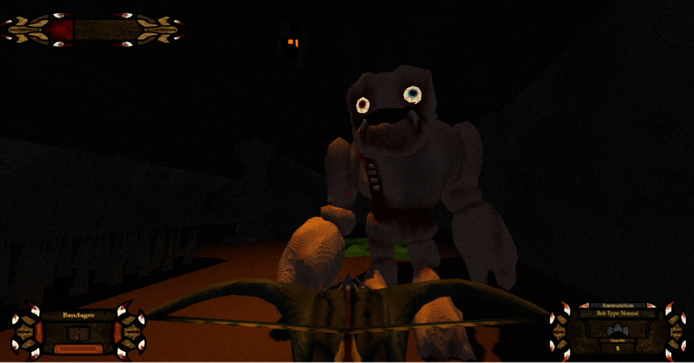
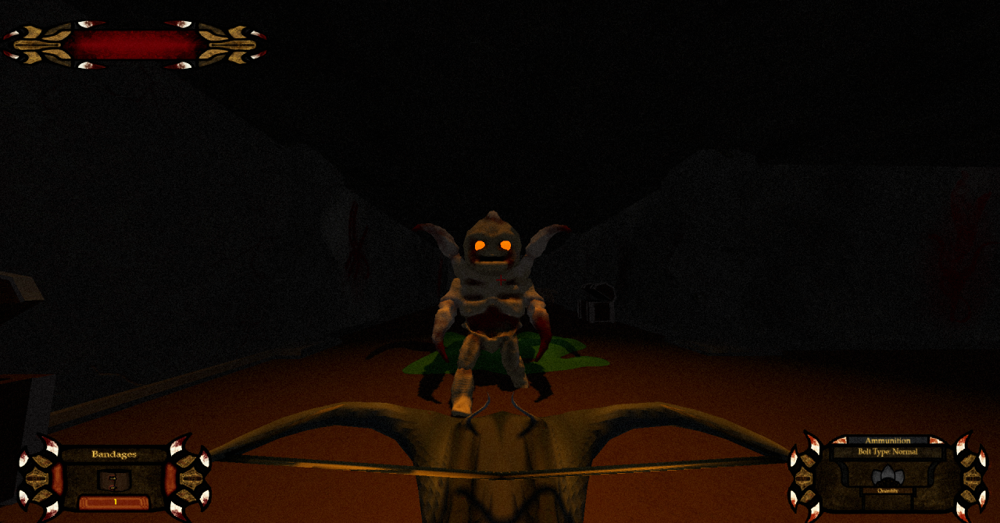

Forgotten Abyss
Forgotten Abyss is a first-person dungeon crawler where players must explore a dark, maze-like prison filled with traps and undead enemies. Armed with only a crossbow and limited resources, players scavenge for ammo, keys, and healing items while fighting through or sneaking around the creatures that roam the halls.
Year: 2022
Role: Game Designer, Level Designer, Programmer
Team Size: 6
Development Time: 6 Months
Engine: C++ (OpenGL)

Major Contributions
- Implemented player movement and rotation
- Designed and added crossbow combat (shooting, damage, reload)
- Created health system with healing items
- Built simple inventory system with item pickups
- Added collectible items: Bandages, Keys, Arrows
- Developed traps: Slime trap, Spike trap
- Designed levels using enemies, traps, and item placement
